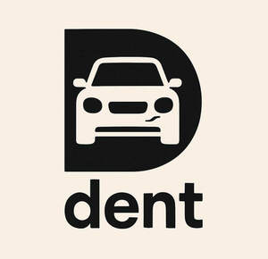

Trade Mark Journal No.2025/020 16 May 2025
UK00004198505 3 May 2025 (9,12,35,36,37,42)

- Class 9
- Application software; Application development software; Mobile application software; Web application software; Downloadable application software; Business application software; Workflow applications; Enterprise application software [EAS]; Computer software for application and database integration; Application software for mobile devices; Downloadable software in the nature of a mobile application; Software applications; Downloadable applications; Application software for wireless devices; Computer software for use as an application programming interface (API); Application software for mobile phones; Downloadable computer software for use as an application programming interface (API); Downloadable smart phone application software; Downloadable software applications; Downloadable mobile applications; Application software for cloud computing services; Downloadable mobile applications for the management of information; Information retrieval applications; Downloadable mobile applications for the management of data; Application software for smart phones; Computer application software for mobile phones; Smartphone software applications, downloadable; Downloadable application software for smart phones; Software applications for use with mobile devices; Software applications for mobile devices; Software and applications for mobile devices; Downloadable applications for use with mobile devices; Downloadable applications for mobile devices; Downloadable mobile applications for the transmission of information; Downloadable computer software applications; Downloadable mobile applications for the transmission of data; Downloadable smart phone applications (software); Downloadable software applications for mobile phones.
- Class 12
- Patches for repairing vehicle tires.
- Class 35
- Automobile registration services.
- Class 36
- Vehicle insurance services; Motor vehicle insurance services; Motor mechanical breakdown insurance warranty services; Automobile accident insurance underwriting; Vehicle warranty services; Insurance services relating to motor vehicles; Underwriting of personal accident insurance (Services for the -); Financial services relating to the insurance of motor vehicles; Motor insurance; Financial guarantee services for the reimbursement of expenses incurred as a result of vehicle accident; Warranty insurance services.
- Class 37
- Vehicle maintenance and repair; Motor vehicle maintenance and repair; Vehicle repair services; Motor vehicle repair and maintenance services; Motor vehicle maintenance and repair services; Automobile repair; Garage services for motor vehicle repair; Garage services for the maintenance and repair of motor vehicles; Inspection of vehicles prior to repair; Vehicle repair, maintenance, refuelling and recharging; Inspection of automobiles and their parts prior to maintenance and repair; Vehicle windscreen replacement services; Repair of automobiles; Tyre repair; Rental of vehicle maintenance equipment; Repair of windscreens; Garage services for vehicle maintenance; Advisory services relating to the repair of motor vehicles; Maintenance and repair of photographic equipment.
- Class 42
- Rental of application software; Development of computer software application solutions; Application service provider [ASP], namely, hosting computer software applications of others; Development and design of mobile applications; Application service provider (ASP); Development services relating to computer software application solutions; Design and development of software in the field of mobile applications; Application service provider (ASP) services, namely, hosting computer software applications of others; Information services relating to the application of computer systems; Providing temporary use of web-based applications; User authentication services using single sign-on technology for online software applications; Hosting of mobile applications; Technical consultancy relating to the application and use of computer software; Installation and customisation of computer applications software; Providing user authentication services using single sign-on technology for online software applications; Application service provider [ASP] services; Hosting of interactive applications; Repair of damaged computer programs; Maintenance and repair of software; Installation, maintenance, repair and servicing of computer software.
Ian Hitchcock